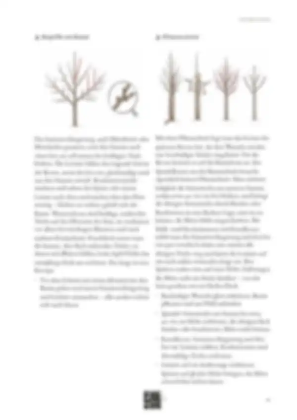
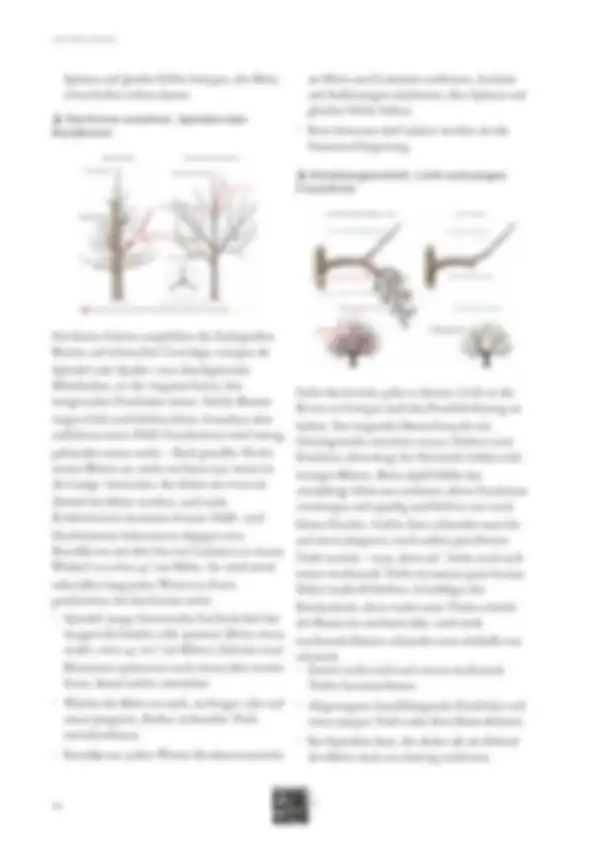
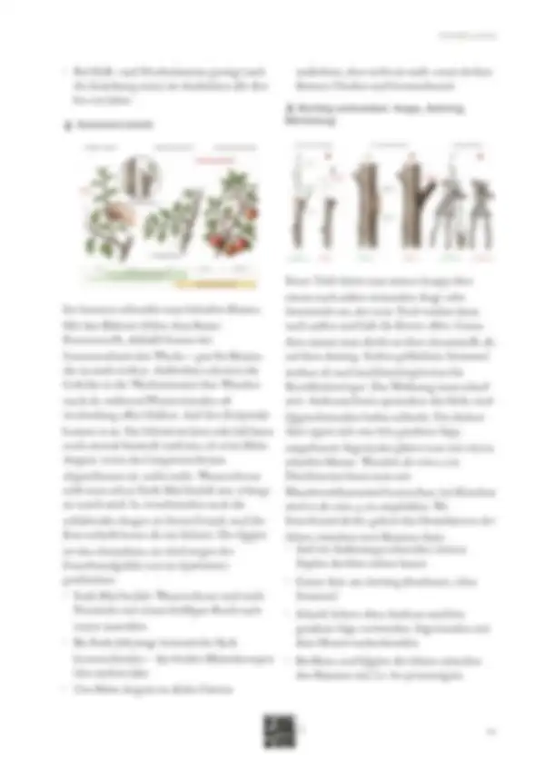
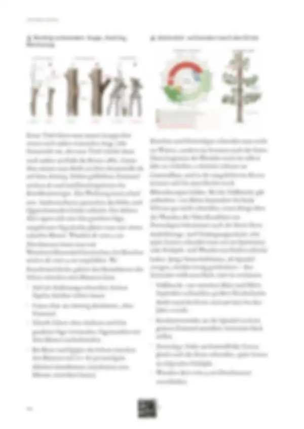
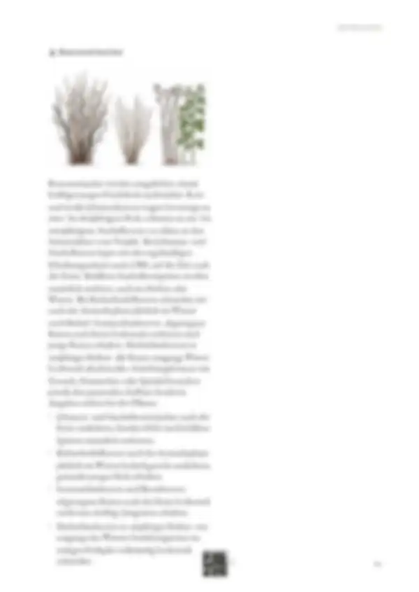

Tippe eine Quelle an, um zu sehen, wo sie verwendet wird – oder tippe auf einen Bereich der Seite.
24 Quellen dieser Abschnitt
Original · abgerufen am 26.10.2026 · ● belegtVerwendet in: Einleitung, Begriffe am Baum, Pflanzschnitt, Die Krone erziehen: Spindel oder Rundkrone, Erhaltungsschnitt: Licht und junges Fruchtholz, Richtig schneiden: Auge, Astring, Werkzeug, Steinobst: schneiden nach der Ernte
Original · abgerufen am 28.10.2026 · ◐ ErfahrungVerwendet in: Einleitung, Begriffe am Baum, Die Krone erziehen: Spindel oder Rundkrone, Sommerschnitt, Steinobst: schneiden nach der Ernte, Beerensträucher
Original · abgerufen am 27.10.2026 · ◐ ErfahrungVerwendet in: Begriffe am Baum, Pflanzschnitt, Die Krone erziehen: Spindel oder Rundkrone
Original · abgerufen am 28.10.2026 · ◐ ErfahrungVerwendet in: Begriffe am Baum, Pflanzschnitt, Die Krone erziehen: Spindel oder Rundkrone, Erhaltungsschnitt: Licht und junges Fruchtholz
Original · abgerufen am 28.10.2026 · ◐ ErfahrungVerwendet in: Begriffe am Baum, Pflanzschnitt, Die Krone erziehen: Spindel oder Rundkrone, Erhaltungsschnitt: Licht und junges Fruchtholz, Sommerschnitt
Original · abgerufen am 26.10.2026 · ◐ ErfahrungVerwendet in: Pflanzschnitt, Steinobst: schneiden nach der Ernte
Original · abgerufen am 27.10.2026 · ◐ ErfahrungVerwendet in: Pflanzschnitt
Original · abgerufen am 26.10.2026 · ● belegtVerwendet in: Die Krone erziehen: Spindel oder Rundkrone
Original · abgerufen am 26.10.2026 · ● belegtVerwendet in: Die Krone erziehen: Spindel oder Rundkrone
Original · abgerufen am 27.10.2026 · ● belegtVerwendet in: Die Krone erziehen: Spindel oder Rundkrone, Steinobst: schneiden nach der Ernte
Original · abgerufen am 26.10.2026 · ◐ ErfahrungVerwendet in: Erhaltungsschnitt: Licht und junges Fruchtholz, Sommerschnitt, Richtig schneiden: Auge, Astring, Werkzeug
Original · abgerufen am 26.10.2026 · ● belegtVerwendet in: Sommerschnitt
Original · abgerufen am 28.10.2026 · ◐ ErfahrungVerwendet in: Richtig schneiden: Auge, Astring, Werkzeug, Steinobst: schneiden nach der Ernte
Original · abgerufen am 27.10.2026 · ● belegtVerwendet in: Steinobst: schneiden nach der Ernte
Original · abgerufen am 26.10.2026 · ● belegtVerwendet in: Beerensträucher
Original · abgerufen am 28.10.2026 · ◐ ErfahrungVerwendet in: Beerensträucher
Original · abgerufen am 26.10.2026 · ● belegtVerwendet in: Beerensträucher
Original · abgerufen am 26.10.2026 · ◐ ErfahrungVerwendet in: Beerensträucher
Original · abgerufen am 27.10.2026 · ● belegtVerwendet in: Beerensträucher
Original · abgerufen am 28.10.2026 · ◐ ErfahrungVerwendet in: Beerensträucher
Original · abgerufen am 28.10.2026 · ● belegtVerwendet in: Beerensträucher
Original · abgerufen am 26.10.2026 · ● belegtVerwendet in: Beerensträucher
Original · abgerufen am 26.10.2026 · ● belegtVerwendet in: Beerensträucher
Original · abgerufen am 26.10.2026 · ● belegtVerwendet in: Beerensträucher
● belegt (Versuch, Fachinstitut) · ◐ Erfahrung (Beratung, Praxis) · ○ Überlieferung. Abschnitte ohne eigene Quellenangabe in den Daten zeigen die Quellen der ganzen Seite („Seite allgemein“).